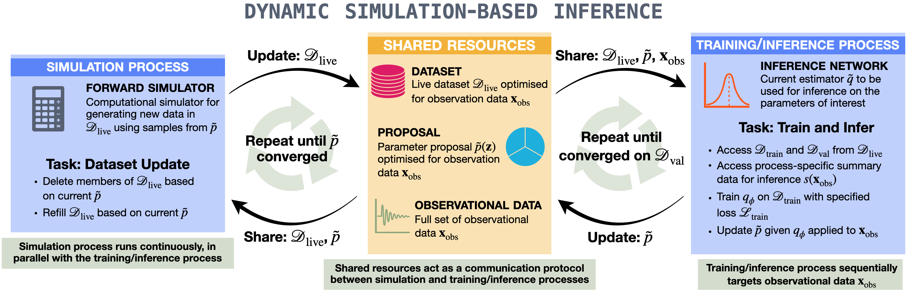

Once trained, any new \(x_\mathrm{obs}\) is a single forward pass. Beautiful.
But the posterior \(p(\theta\mid x_\mathrm{obs})\) usually occupies a tiny fraction of the prior. The vast majority of simulations carry almost no information about \(x_\mathrm{obs}\).
Cost scales with the prior volume, not the posterior volume. In high precision / high dimension, that ratio explodes.
Grey: \(\theta\sim p(\theta)\). Red contour: the (narrow) target posterior. Almost nothing lands inside.
The sequential fix: focus the budget
If only we knew the posterior, we would sample \(\theta\) from there directly. We don't, but we can bootstrap:
Round \(r=0\): sample from the prior. Train a rough posterior \(q_\phi^{(0)}(\theta\mid x_\mathrm{obs})\).
Round \(r{+}1\): use \(q_\phi^{(r)}(\theta\mid x_\mathrm{obs})\) as the next proposal \(\tilde p(\theta)\). Simulate, retrain.
Repeat. The cloud contracts toward the true posterior.
Press Next round to watch the training cloud shrink onto the target.
round 0 / prior
The catch: a proposal is not the prior
If we train \(q_\phi\) on samples \(\theta \sim \tilde p(\theta)\) (the proposal) instead of \(\theta \sim p(\theta)\) (the prior), the network learns the proposal posterior, not the true one:
Division by the proposal cancels the bias toward where we chose to sample; multiplication by the prior reinstates the original Bayesian weighting. The trained \(q_\phi\) is not the answer; the ratio is.
Variants in passing: SNPE-B and SNPE-C (APT) reshuffle where the correction is applied so it stays well-conditioned for flexible densities. SNLE learns the likelihood instead, SNRE learns the likelihood ratio. All share the round-based skeleton.
Why the correction is exactly \(p/\tilde p\)
What does \(q_\phi\) converge to when we train it by maximum likelihood on samples \(\theta_n \sim \tilde p(\theta)\) and \(x_n \sim p(x\mid\theta_n)\)?
The joint sampling distribution is \(\tilde p(\theta,x) = p(x\mid\theta)\,\tilde p(\theta)\). The expectation is minimised pointwise in \(x\) by setting
Slide the proposal: the grey curve drifts with it, the red curve does not.
Rounds mean idle compute
The sequential loop is strictly serial: simulate a batch, then train on it, then simulate the next.
Round-based timeline
Simulate (round 0)
idle
Train
idle
Simulate (round 1)
idle
Train
idle
Sim 2
Train
Trainer idle while the simulator fills the next batch.
Simulator idle while the trainer drains the current batch.
All-or-nothing rounds: a bad proposal wastes a whole round before correction.
What if simulation and training could run at the same time?
What can go wrong with sequential SBI
The ratio \(p(\theta)/\tilde p(\theta)\) is what makes sequential SBI valid, but it is also where the trouble starts.
Light-tailed proposal
If \(\tilde p(\theta)\) decays faster than \(p(\theta)\), the weight \(p/\tilde p\) blows up in the tails. A single far-out sample dominates the corrected posterior. Variance explodes.
Proposal leakage
A flexible \(q_\phi\) (e.g. a normalising flow) can place mass outside the prior. The next proposal samples there; those simulations are wasted, and \(p/\tilde p\) is ill-defined.
All-or-nothing rounds
A bad proposal at round \(r\) doesn't reveal itself until training finishes. The whole simulation budget for that round is committed before you know.
The fixes that motivated SNPE-B, SNPE-C (APT), and family:
SNPE-B: weight the training loss by \(p/\tilde p\) instead of correcting after the fact. Avoids the division but inherits high-variance weights.
SNPE-C (APT): parametrise the proposal posterior directly so the ratio is built into the loss. Requires an "atomic" proposal trick to stay tractable.
Dynamic SBI (next): keep \(\tilde p\) close to the prior at all times by updating it continuously, so the ratio never gets a chance to misbehave.
Dynamic SBI: round-free, adaptive datasets
Take the round count to infinity. Simulation, training, and proposal updates all happen in parallel.
The dynamic SBI framework
Two processes run in parallel, communicating through shared resources:
Simulator process keeps a live dataset \(\mathcal{D}_\mathrm{live}\) up to date with the current proposal \(\tilde p(\theta)\), deleting stale samples and drawing new ones.
Trainer process optimises \(q_\phi\) on \(\mathcal{D}_\mathrm{live}\), and updates \(\tilde p(\theta)\) so the next batch of simulations is even more relevant to \(x_\mathrm{obs}\).
No rounds. No barrier. Each process pushes ahead with whatever the other has produced so far.

Lyu et al. 2025, Fig. 1.
The asynchronous loop, in pseudocode
Simulator process (loop forever)
while running:
θ ~ p̃(θ) # current proposal
x = simulate(θ)
w = p(θ) / p̃(θ) # importance weight
D_live.append( (θ, x, w) )
# prune stale, low-weight samples
for (θ_i, x_i, w_i) in D_live:
if w_i < w_thresh
or p̃(θ_i) below current support:
D_live.remove(i)
Trainer process (loop forever)
while running:
B = sample_minibatch(D_live)
L = -mean_{(θ,x,w) in B}[
log q_φ(θ | x) ] # weighted optional
φ ← φ - η ∇_φ L
# periodically refresh proposal
if step % K == 0:
p̃(θ) ← truncate(
q_φ(θ | x_obs), # current estimate
support = prior
)
Shared resources: the live dataset \(\mathcal{D}_\mathrm{live}\), the proposal \(\tilde p(\theta)\), and the observation \(x_\mathrm{obs}\). Both processes read and write them concurrently, with appropriate locking.
No outer "round" index. The trainer never waits for a batch to fill; the simulator never waits for training to finish.
The adaptive dataset, in motion
Instead of three discrete rounds (previous animation), the training set evolves continuously:
Old samples that no longer match the sharpening proposal fade out.
New samples stream in from the current \(\tilde p(\theta)\).
The cloud flows toward the target posterior without ever stopping.
Same target as before. Press Run; the cloud contracts smoothly rather than in jumps.
Truncation and the same SNPE-A correction
Each sample in the live dataset carries an importance weight
Samples whose weight drops below threshold (the proposal moved away from them) are truncated from \(\mathcal{D}_\mathrm{live}\) and re-simulated under the new proposal. Nothing ever sits in the buffer doing nothing useful.
At every instant, the posterior estimate is recovered by the same SNPE-A correction as in the round-based case:
The correction makes round-free possible: the proposal can change continuously without breaking the Bayesian bookkeeping. Sequential SBI in the limit of infinitely many infinitesimal rounds.
Dynamic vs round-based vs amortized
10-D bimodal Gaussian benchmark. Four schemes given the same wall-clock budget:
Dynamic SBI
Amortized
Round-based (keep old data)
Round-based (new data only)
Dynamic reaches the lowest validation loss and uses the fewest simulations to get there. The simulator-trainer panels (right) show no idle gaps.